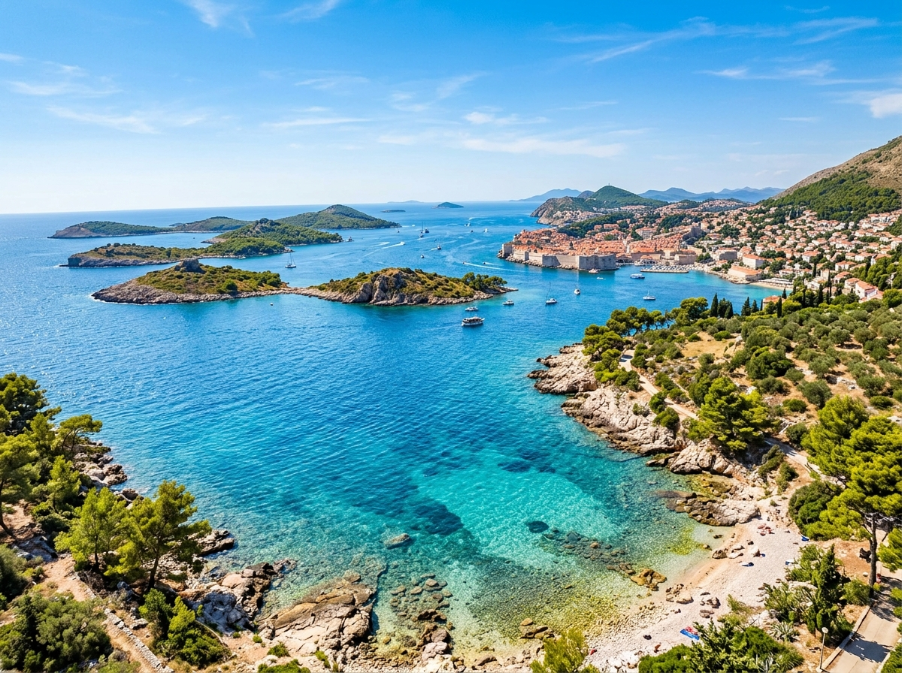
Hier stehen die wichtigsten Daten zu deinem Land. In der App baust du daraus deinen eigenen Steckbrief.
| Hauptstadt | Zagreb |
| Kontinent | Europa |
| Sprache | Kroatisch |
| Währung | Euro (seit 2023) |
| Einwohner | rund 3,9 Millionen Menschen |
| Fläche | etwa 57.000 km², etwas kleiner als Bayern |
| Großes Gewässer | die Adria, ein Teil des Mittelmeers, mit vielen Inseln |
| Höchster Berg | die Dinara, etwa 1.830 Meter hoch |
| Nachbarländer | Slowenien, Ungarn, Serbien, Bosnien-Herzegowina und Montenegro |
In Kroatien gibt es viele berühmte Orte. Diese vier solltest du kennen.
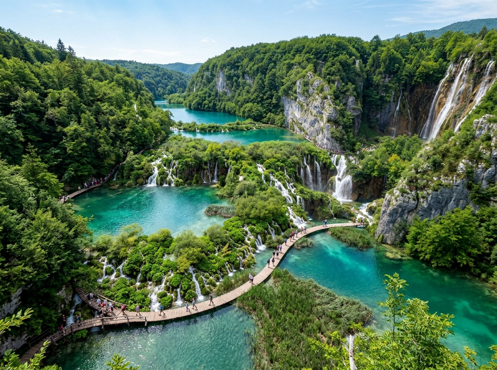
Plitvicer SeenDie Plitvicer Seen sind eine Landschaft aus 16 Seen mitten im Wald. Die Seen sind durch viele Wasserfälle miteinander verbunden. Das Wasser schimmert türkisblau und grün. Über schmale Holzstege kann man mitten durch die Natur wandern.
Grüne Wörter für die App16 SeenWasserfälletürkisblauWaldHolzstege
Altstadt von DubrovnikDubrovnik ist eine alte Stadt direkt am Meer. Eine hohe Stadtmauer umschließt die ganze Altstadt. Man kann oben auf der Mauer um die komplette Stadt herumlaufen. Von dort hat man einen tollen Blick auf das Meer und die roten Dächer.
Grüne Wörter für die AppStadtmaueram MeerAltstadtrote Dächerherumlaufen
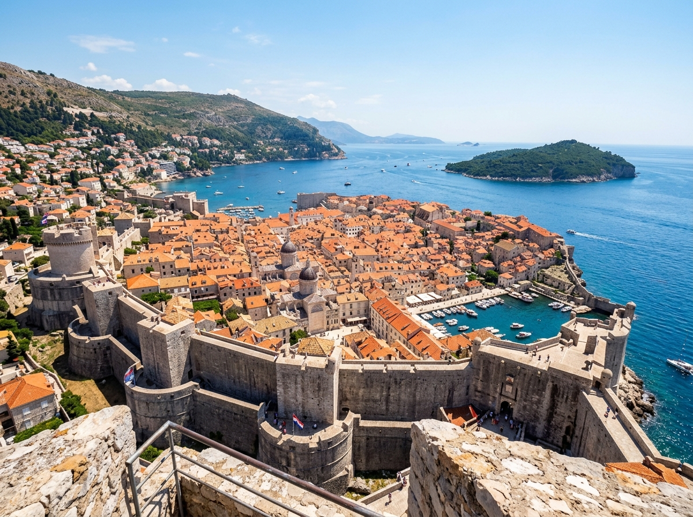
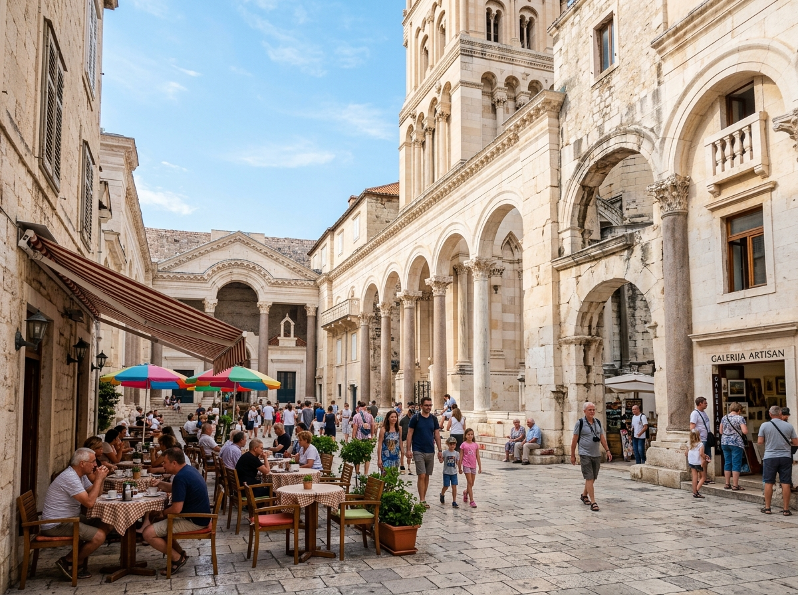
Diokletianspalast in SplitIn der Stadt Split steht ein riesiger Palast aus der Römerzeit. Er ist schon fast 2000 Jahre alt. Das Besondere ist: Mitten in den alten Mauern wohnen heute echte Menschen. Es gibt dort Wohnungen, Läden und kleine Cafés.
Grüne Wörter für die Appalter PalastRömerzeitSplituraltMenschen wohnen drin
Inseln in der AdriaVor der Küste von Kroatien liegen über tausend Inseln im Meer. Das Wasser der Adria ist klar und blau. Viele Menschen fahren mit dem Schiff von Insel zu Insel. Sie baden im Meer und liegen in der Sonne am Strand.
Grüne Wörter für die Appviele InselnAdriaklares WasserSchiffStrand
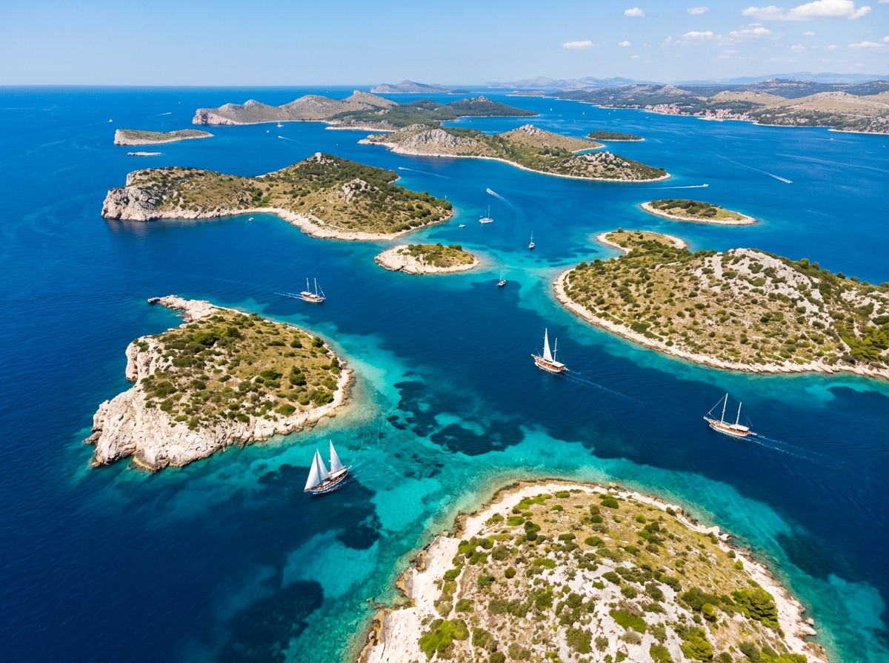
In den Wäldern, Bergen und am Meer Kroatiens leben Tiere, die man bei uns kaum findet.
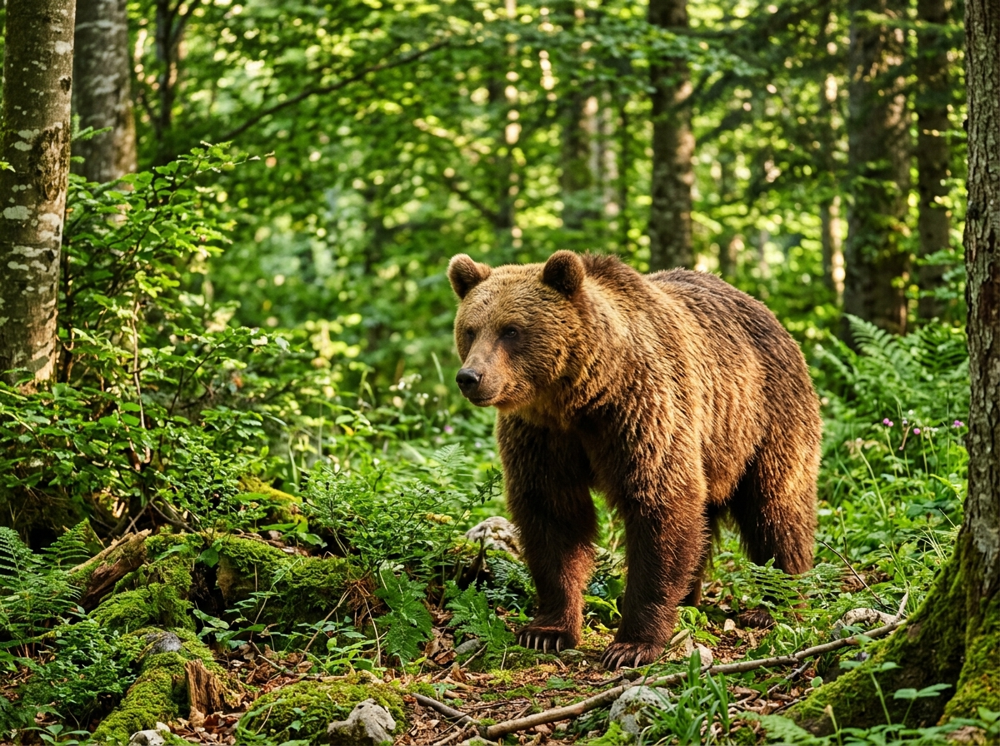
BraunbärIn den Wäldern und Bergen von Kroatien leben echte Braunbären. Sie sind groß und stark, aber sehr scheu. Darum bekommt man sie kaum zu sehen. Am liebsten bleiben sie weit weg von den Städten.
Grüne Wörter für die Applebt im Waldgroß und starkscheuin den Bergenselten zu sehen
DalmatinerDer Dalmatiner ist ein Hund mit schwarzen Punkten auf weißem Fell. Diese Hunderasse kommt aus der kroatischen Küstenregion Dalmatien. Daher hat der Hund auch seinen Namen. Dalmatiner sind verspielt und können sehr schnell laufen.
Grüne Wörter für die Appschwarze Punkteweißes Fellaus DalmatienHundschnell
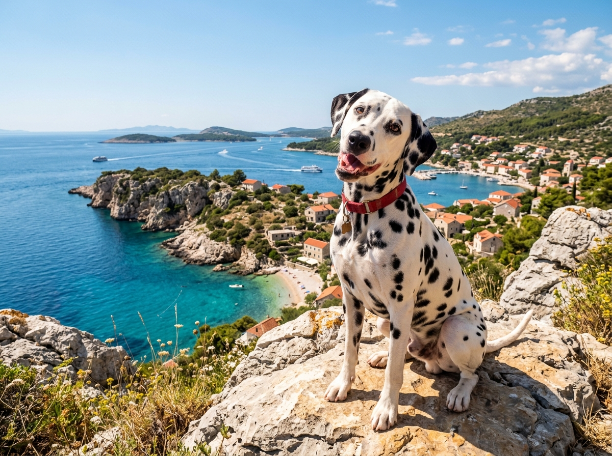
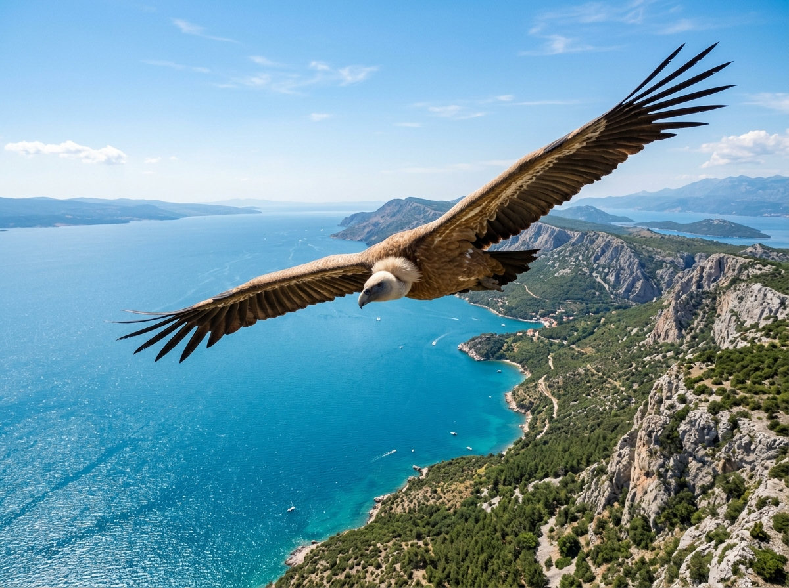
GänsegeierAuf der Insel Cres leben viele Gänsegeier. Das sind riesige Vögel mit breiten Flügeln. Wenn sie die Flügel ausbreiten, sind sie über zwei Meter breit. Sie segeln hoch oben am Himmel über dem Meer.
Grüne Wörter für die Appriesiger VogelInsel Cresbreite Flügelüber 2 Meteram Himmel
In der App kannst du beim Essen das Foto nehmen oder dein Gericht selbst malen.
ĆevapiĆevapi sind kleine Röllchen aus Hackfleisch. Sie werden auf dem Grill gebraten. Dazu gibt es Fladenbrot und rohe Zwiebeln. Im ganzen Land essen die Menschen dieses Gericht gern.
Grüne Wörter für die AppHackfleischvom GrillFladenbrotZwiebelnkleine Röllchen
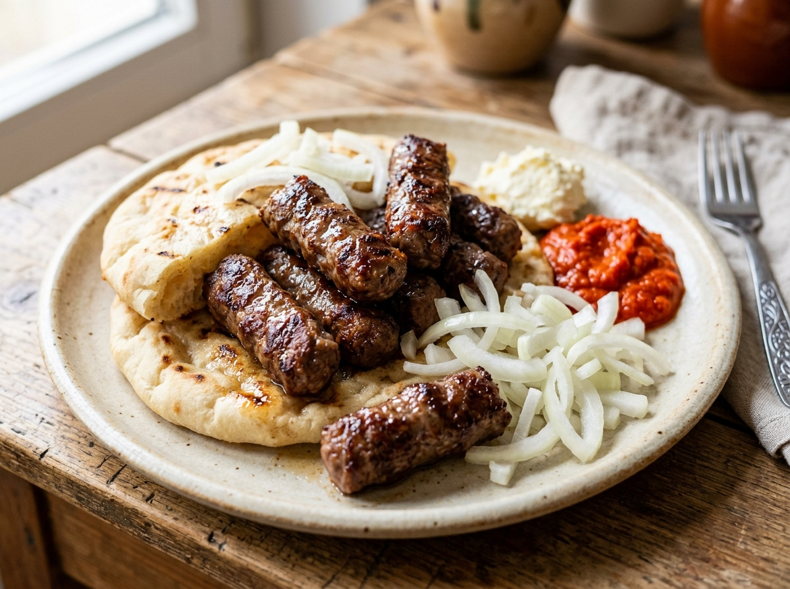
PekaBei der Peka wird Fleisch oder Gemüse unter einer schweren Glocke gegart. Auf die Glocke kommt heiße Glut. So gart das Essen ganz langsam. Es dauert lange, schmeckt aber besonders saftig.
Grüne Wörter für die Appunter der Glockeheiße GlutFleisch und Gemüselangsamsaftig
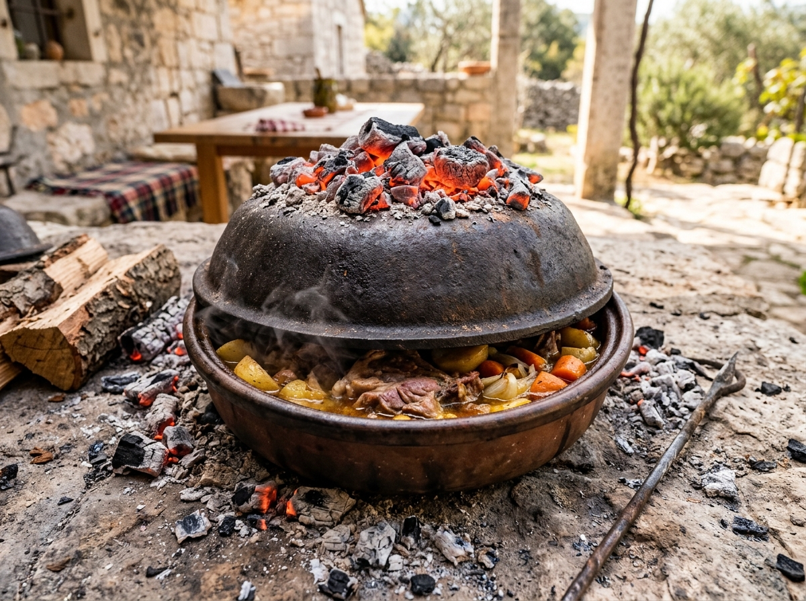
FrituleFritule sind kleine, runde Krapfen. Sie sehen aus wie winzige Donuts. Man backt sie oft zu Weihnachten. Sie schmecken nach Zitrone und sind innen weich.
Grüne Wörter für die Appkleine Krapfenrunde BällchenWeihnachtenZitronesüß
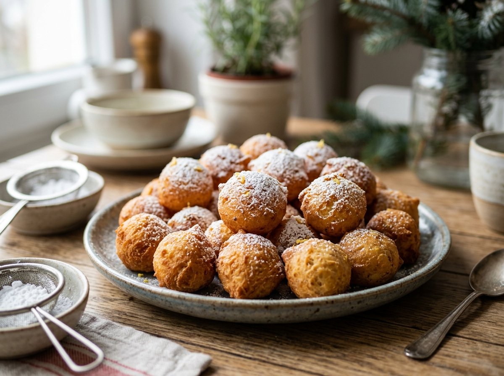
⚽ Gut zu wissen
Die Fußball-Nationalmannschaft von Kroatien heißt Vatreni, das bedeutet die Feurigen. Sie spielt im rot-weiß karierten Trikot, das aussieht wie ein Schachbrett. Dieses Muster erkennt man auf der ganzen Welt. Kroatien ist eine sehr starke Mannschaft. 2018 wurde das Land Vize-Weltmeister und 2022 sogar WM-Dritter. Bei der WM 2026 ist Kroatien wieder dabei.
Grüne Wörter für die AppVatrenirot-weiß kariertSchachbrettWM 2026Luka Modrić
🌟 Profi-Wissen
Luka Modrić ist Kroatiens größter Fußballstar. Bei der WM 2018 führte er das kleine Land bis ins Finale. In diesem Jahr wurde er zum besten Spieler der Welt gewählt. Kroatien hat nur etwa vier Millionen Einwohner, ist aber trotzdem sehr gut im Fußball.
Grüne Wörter für die AppLuka ModrićWM-Finale 2018bester Spieler der Weltkleines Landgroße Leistung
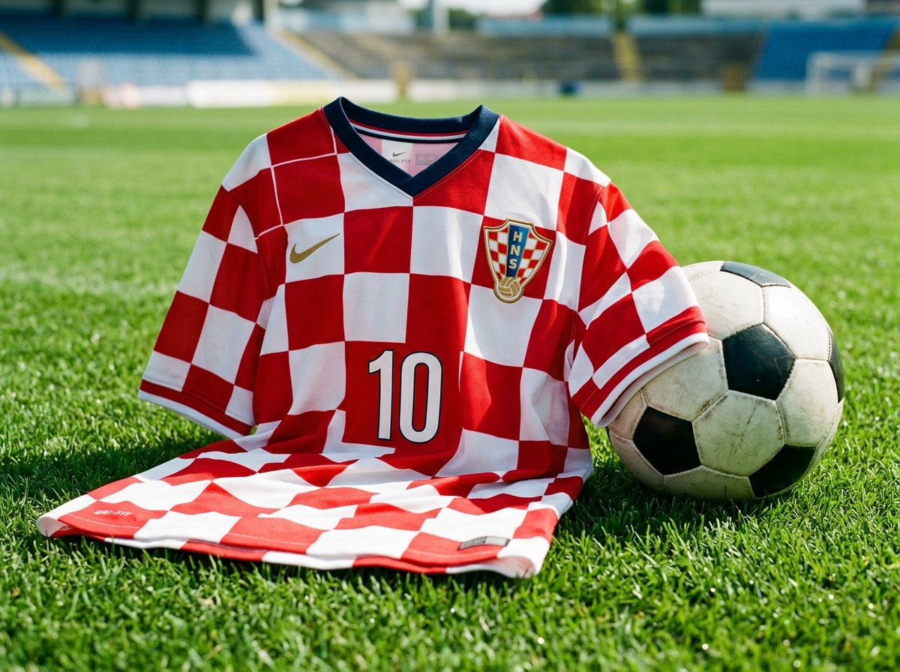
Schule in KroatienIn Kroatien beginnt die Schule für die Kinder mit sechs oder sieben Jahren. Viele Schulen haben so viele Kinder, dass nicht alle gleichzeitig Platz haben. Darum gehen manche Kinder am Vormittag zur Schule und andere am Nachmittag. In der Woche darauf wird oft getauscht. So eine Schicht-Schule kennen wir bei uns nicht.
Grüne Wörter für die AppSchule ab 6zu viele KinderVormittagNachmittagSchicht-Schule
Leben am MeerSehr viele Kinder in Kroatien wohnen in der Nähe der Adria. Im Sommer ist es dort sehr heiß. Nach der Schule gehen viele Kinder ans Meer und baden im klaren Wasser. Am Hafen liegen kleine Boote, und auf dem Markt kaufen die Familien frischen Fisch und Obst.
Grüne Wörter für die Appam MeerAdriabadenBoote im HafenMarkt
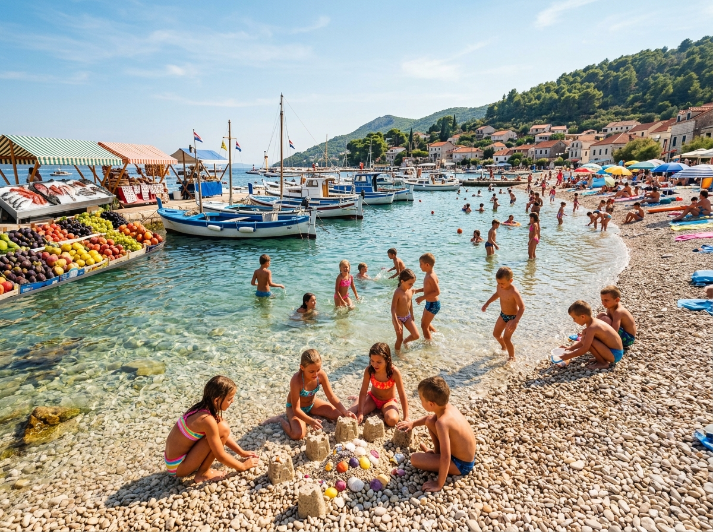